path2data <- paste0(Sys.getenv("HOME"), "/Library/CloudStorage/",
"OneDrive-OxfordUniversityClinicalResearchUnit/",
"GitHub/choisy/malarone/")Mosquito-mediated epidemiological effects of malarone treatment
In this analysis we use the formalism of Smith and McKenzie (2004).
1 Parameters
The path to the data:
Whether or not to force the effects to be equal to \(0\) at \(t = 28\) days (in practice it does not change things much anyway):
t28_0 <- TRUEColors:
YlOrRd10 <- hcl.colors(10, "YlOrRd", rev = TRUE)
YlOrRd11 <- hcl.colors(11, "YlOrRd", rev = TRUE)
color1 <- 2
color2 <- 3
color3 <- 4Line width:
lwd_val <- 2Plot labels:
xlab_pda <- "time post drug administration (hours)"
ylab_delta <- bquote(R[0] ~ "reduction factor" ~ delta)
ylab_pi <- bquote(R[0] ~ "reduction factor" ~ pi)
ylab_rho <- bquote(R[0] ~ "reduction factor" ~ rho)
ylab_b <- bquote("reducing factor on b and" ~ R[0])Plots parameters sets:
mcx <- 3 / 2
parmfrow3x3 <- function() {
par(mfrow = c(3, 3), mex = mcx, cex.axis = mcx, cex.lab = mcx, cex.main = mcx)
}2 Packages
Required packages:
required_packages <- c("readr", "readxl", "dplyr", "purrr", "stringr", "tibble")Installing those that are not installed:
to_inst <- required_packages[! required_packages %in% installed.packages()[,"Package"]]
if (length(to_inst)) install.packages(to_inst)Loading some for interactive use:
library(dplyr)
library(purrr)3 Functions
Tuning some base functions:
seq2 <- function(...) seq(..., le = 512)
abline2 <- function(...) abline(..., col = "grey")
lines2 <- function(...) lines(..., lwd = lwd_val)
lines3 <- function(...) lines2(..., col = color1)
segments2 <- function(...) segments(..., col = color3, lwd = lwd_val)
plot2 <- function(...) plot(..., col = color3, pch = 3, lwd = lwd_val)
plotl <- function(...) plot(..., type = "l", col = color1, lwd = lwd_val)
arrows2 <- function(...) arrows(..., col = color2, length = .15, lwd = lwd_val)
readRDS2 <- function(f, ...) tibble::as_tibble(readRDS(paste0(path2data, f), ...))
legend2 <- function(...) legend(bty = "n", lty = 1, lwd = lwd_val, ...)A function that replaces the value at index i in a vector v by the minimum of the values of v with an index equal or higher than i:
min_of_following <- function(x) {
c(min(x), map_dbl(1:(length(x) - 1), ~ min(x[-(1:(.x))])))
}A function that replace the NA values of a vector by 0:
NAto0 <- function(x) {
x[is.na(x)] <- 0
x
}4 Theoretical results
In this section we pull out the most relevant theoretical results from Smith and McKenzie (2004).
The individual vectorial capacity (noted \(IC\) in Smith and McKenzie (2004) but noted \(C\) here) is defined by Saul et al. (1990) as the expected number of infectious bites from a single vector after feeding on an infectious host and reads:
\[ C = c \cdot P_e \cdot S \]
where \(c\) is the transmission efficiency from human to mosquito (i.e. the probability of becoming infected after feeding on an infectious human), \(P_e\) is the probability of becoming infectious for an infected mosquito:
\[ P_e = e^{-gn} \] (with \(g\) the mosquito death rate and \(n\) the EIP), and \(S\) is the stability index, i.e. the total number of bites per mosquito during its lifetime:
\[ S = \frac{a}{g} \]
with \(a\) the mosquito biting rate, i.e. the number of bites per mosquito. Gathering everything gives:
\[ C = c \cdot e^{-gn}\frac{a}{g} \]
The basic reproduction ratio is the expected number of infected humans per infected human or, equivalently, the expected number of infected mosquitoes per infected mosquito and can be expressed as:
\[ R_0 = \frac{C \cdot b \cdot a \cdot m}{r} \tag{1}\]
where \(C\) is the above-defined individual vectorial capacity, \(b\) is the transmission efficiency from mosquito to human, \(r\) is the recovery rate of humans, and \(m\) is the ratio of mosquitoes to humans.
Finally, the prevalance \(\bar{X}\) (i.e. proportion of infected humans) at equilibrium can be expressed as a function of \(R_0\):
\[ \bar{X} = \frac{R_0 - 1}{R_0 + c S} \]
Note the main assumption of this framework:
Assumption 1: the mosquito death rate is independent of the mosquito’s age.
5 Experimental data
The experimental results suggest that malarone
- decreases by the multiplicative factor \(1 - \alpha\) (\(0 \leq \alpha \leq 1\)) the number of mosquitoes with oocysts at 7dpi (with \(\alpha\) shown on the \(y\) axis of Figure 2a);
- decreases by the multiplicative factor \(1 - \beta\) (\(0 \leq \beta \leq 1\)) the oocysts load in mosquitoes still harboring oocysts at 7dpi (with \(\beta\) shown on the \(y\) axis of Figure 2b);
- decreases by the multiplicative factor \(1 - \gamma\) (\(0 \leq \gamma \leq 1\)) the size of oocysts at 7dpi (with \(\gamma\) shown on the \(y\) axis of Figure 3a);
- has no significant effect on the mosquito biting rate \(a\) (Supplementary Figure 10);
- has no significant effect on the mosquito death rate \(g\) (Supplementary Figure 10).
Below we insert the 3 significant effects \(\alpha\), \(\beta\) and \(\gamma\) into the theoretical equations of the previous section.
5.1 Mosquitoes with oocysts
Below, we generate the function \(\alpha(t)\) from the experimental data of Figure 2a. First we need a function that reads experimental data for the treatment group:
make_reading_exp_data <- function() {
hours <- c(0, 5, 48, 72)
days <- c(5, 7, 14, 28)
hash <- c(setNames(hours, paste0("H", hours)),
setNames(24 * days, paste0("D", days)))
function(file) {
file |>
readRDS2() |>
filter(treatment == "AL+AP") |>
mutate(time_hours = hash[stringr::str_remove(time_points, "0")],
across(Inhibition, ~ .x / 100))
}
}
reading_exp_data <- make_reading_exp_data()We also need a function that converts such experimental data into a function:
data2function <- function(data, correction = t28_0) {
apply_correction <- function(x) {
if (correction) return(mutate(x, median_val = c(head(median_val, -1), 0)))
x
}
data |>
group_by(time_hours) |>
summarise(median_val = max(0, median(Inhibition))) |>
bind_rows(tibble(time_hours = 0, median_val = 0)) |>
arrange(time_hours) |>
apply_correction() |>
with(approxfun(time_hours, median_val))
}where correction = TRUE means that the value at \(t = 28\) days is forced to be equal to \(0\). Let’s now pull out the data from Figure 2a:
alpha_data <- reading_exp_data("figure2a.rds")and create a function alpha() of the percentage \(\alpha(t)\) inhibition on sporozoite infection rate as a function of time \(t\) post drug administration:
alpha0 <- data2function(alpha_data)
alpha <- function(x) NAto0(alpha0(x))Let’s now visualize this function. For that we first need a function that plots experimental data:
plot_experimental_data <- function(data, ...) {
with(data, plot2(jitter(time_hours), Inhibition, xlab = xlab_pda, ...))
abline(h = 0)
}With this function plot_experimental_data() defined, this is what the \(\alpha(t)\) function coded in alpha() looks like together with the experimental data:
plot_experimental_data(alpha_data, ylim = c(-1, 1),
ylab = bquote("reduction" ~ alpha ~
"of mosquitoes with oocysts"))
pda_t <- seq2(0, 700)
lines3(pda_t, alpha(pda_t))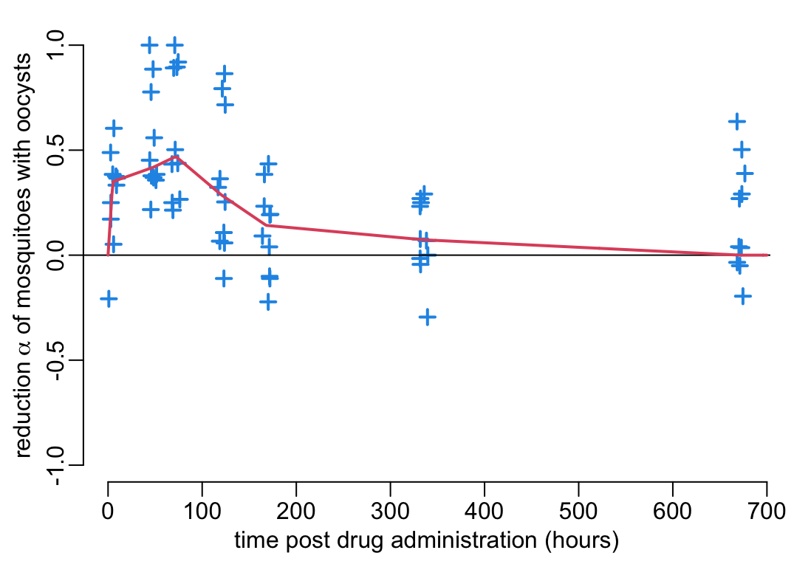
The reduction factor \(1 - \alpha\) of the number of mosquitoes with oocysts (Figure 2a) converts directly into a transmission-blocking activity (TBA) of similar magnitude on \(R_0\):
\[ (1 - \alpha(t))\cdot R_0 \]
where \(R_0\) is the basic reproduction ratio in absence of malarone. The above equation assumes that (i) each mosquito has only 1 bite during its lifetime and (ii) this bite occurs at 4 dpi. Let’s now generalize this effect for multiple bites during the mosquito lifetime. For that, we need to know (i) the times of the bites, (ii) the TBA effect \(\alpha\) at these times and (iii) the proportion \(\zeta\) of the mosquito population at each of these times. The times of the bites is determined by the mosquito biting rate \(a\) and the generalized TBA effect on \(R_O\) thus reads:
\[ \left(1 - \sum_{i = 1}^{+\infty}\alpha\left(\frac{i}{a}\right)\zeta\left(\frac{i}{a}\right)\right) R_0 \]
For example, for a mosquito population with a biting frequency every 3 days (i.e. \(a = 1/3\)) and a life expectancy of 14 days, here is the distribution of ages of feeding mosquitoes in the population:
a <- 1 / 3
g <- 1 / 14
infinity <- 40
x_val <- seq2(0, infinity)
plot(x_val, dexp(x_val, g), type = "l", xlab = "age of mosquito", ylab = "frequency")
feedings <- seq(1 / a, infinity, 1 / a)
abline(v = feedings)
points(feedings, dexp(feedings, g), type = "h", lwd = 10)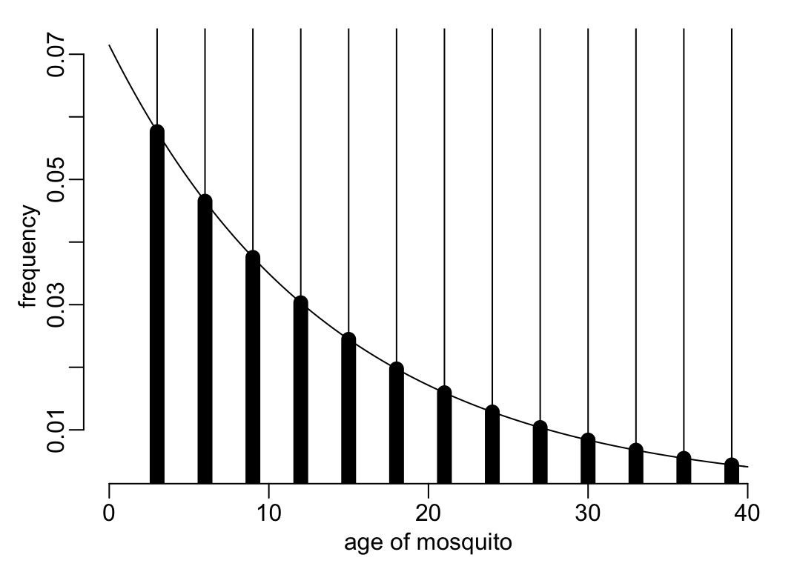
We can thus compute the \(\zeta\) probability distribution by sampling from an exponential distribution:
zeta <- function(a, g, infinity = 60) {
a <- 1 / a
tmp <- dexp(seq(a, infinity, a), g)
tmp / sum(tmp)
}
zeta(1 / 3, 1 / 14) [1] 0.195574093 0.157851321 0.127404603 0.102830516 0.082996334 0.066987814
[7] 0.054067054 0.043638479 0.035221391 0.028427809 0.022944590 0.018518985
[13] 0.014947002 0.012063990 0.009737061 0.007858955 0.006343102 0.005119630
[19] 0.004132144 0.003335127Let’s now compute the \(\alpha\) function at ages other than 4 dpi. For that we assume that the effect of malarone exponentially decreases with time post infection and a conservative assumption is that its effect at 0 dpi is 1. Let’s make this function and look at what it looks like:
make_alpha_dpi <- function(alpha_effect4dpi, alpha_effect0dpi = 1) {
r <- log(alpha_effect0dpi / alpha_effect4dpi) / 4
function(x) alpha_effect0dpi * exp(- r * x)
}
alpha_dpi <- make_alpha_dpi(.5)
plot(x_val, alpha_dpi(x_val), type = "l", xlab = "day post infection", ylab = "alpha")
abline(v = 4); abline(h = .5)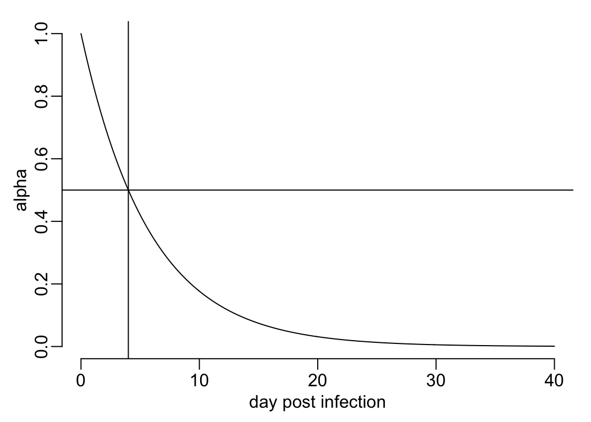
Now that we have both the \(\alpha\) and \(\zeta\) functions, we can compute the TBA epidemiological effect:
alpha_general <- function(t, a, g, infinity = 60) {
feeding_time <- seq(1 / a, infinity, 1 / a)
prop_pop <- zeta(a, g, infinity)
alpha(t) |>
map(make_alpha_dpi) |>
map_dbl(~ sum(.x(feeding_time) * prop_pop))
}plot_experimental_data(alpha_data, ylim = c(-1, 1),
ylab = bquote("reduction" ~ alpha ~
"of mosquitoes with oocysts"))
pda_t <- seq2(0, 700)
lines3(pda_t, alpha(pda_t))
lines2(pda_t, alpha_general(pda_t, 1 / 3, 1 / 14), col = 3)5.1.1 Revision
\(\tau\) is the probability that a person is treated and \(\alpha(i, j)\) is the probability of TBA for a mosquito at \(i\) dpi feeding on a person treated \(j\) hours ago. A mosquito of age \(k\) feeding at the biting rate \(a\) thus
\[ 1 - \prod_{i = 1}^{i \leq k}\left(1 - \tau\alpha\left(\frac{i}{a}, j\right)\right) \]
Across the population:
\[ \sum_{k = 1 / a}^{+\infty}\left[1 - \prod_{i = 1}^{i \leq k}\left(1 - \tau\alpha\left(\frac{i}{a}, j\right)\right)\right]\zeta(k) \]
\[ \int_0^\Delta\sum_{k = 1 / a}^{+\infty}\left[1 - \prod_{i = 1}^{i \leq k}\left(1 - \tau\alpha\left(\frac{i}{a}, t\right)\right)\right]\zeta(k)dt \]
5.2 Number of oocysts
Let’s pull out the data from Figure 2c:
beta_data <- reading_exp_data("figure2c.rds")and create a function beta(t) on the percentage \(\beta(t)\) inhibition on oocysts load as a function of time \(t\) post drug administration:
beta0 <- data2function(beta_data)
beta <- function(x) NAto0(beta0(x))And let’s visualize this function \(\beta(t)\) together with the experimental data:
plot_experimental_data(beta_data, ylim = c(-1, 1),
ylab = bquote("reduction" ~ beta ~
"of the number L of oocysts"))
betas <- beta(pda_t)
lines3(pda_t, betas)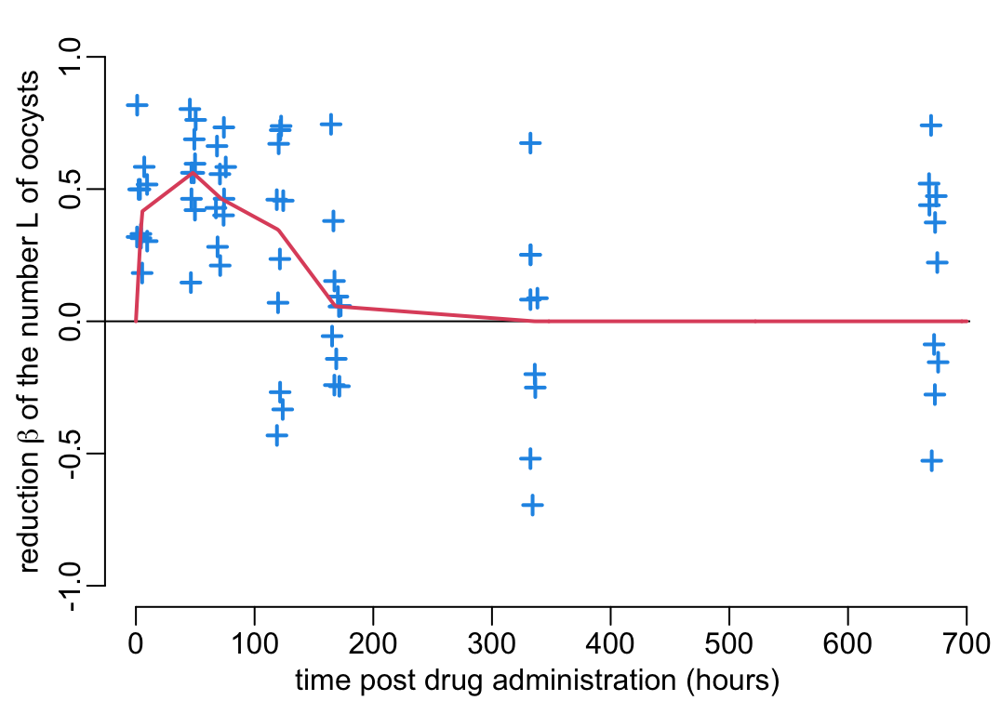
The insertion of the \(\beta\) effect into Equation 1 is less direct and straightforward than for \(\alpha\). To do so, we need to understand how a reduction in the oocysts load \(L\) translates into a reduction of \(b\) in Equation 1.
Figure 2B from Aleshnick et al. (2020) suggests a non-linear relationship \(h\) between the sporozoite load and the transmission efficiency \(b\) of P. yoelii from An. stephensi mosquito to mice with 10,000 salivary gland sporozoites being significantly more likely to initiate a malaria infection. Furthermore, Figure 1 from Miura et al. (2019) documents a strong linear relationship between the numbers of P. falciparum oocysts at 8 dpi and sporozoites at 16 dpi in An. stephensi mosquitoes with about 1,000 sporozoites per oocyst (966, 95% CI: 893–1038)). The effect \(\rho\) of \(\beta\) on \(b\) can thus be modelled as so:
\[ \xi(\beta, L) = \frac{h((1 - \beta)L)}{h(L)} \tag{2}\]
where \(h\) is the functional relationship between the oocsyts load \(L\) and the mosquito-to-human transmission efficiency \(b\) derived from Figures 2B of Aleshnick et al. (2020) and 1 of Miura et al. (2019). We can compute a population mean value of this reduction using the distribution of the oocyst load in the population as so
\[ f(\beta) = \sum_{L = 1}^{+\infty}\xi(\beta, L) \omega(L) \tag{3}\]
where \(\omega(L)\) is the frequency of load \(L\) in the population. Let’s thus first look at the distribution of the oocyst loads \(L\) from the control data:
oocysts_control <- path2data |>
paste0("ASAAP4b_oocyst2.txt") |>
readr::read_table() |>
filter(day_of_dissection == "7dpi",
time_points %in% c("Control", "Unfed"),
total_oocysts > 0) |>
dplyr::select(total_oocysts) |>
na.exclude()
total_oocysts <- oocysts_control$total_oocysts
hist(total_oocysts, main = NA,
xlab = "oocyst load L in the controls", ylab = "frequency")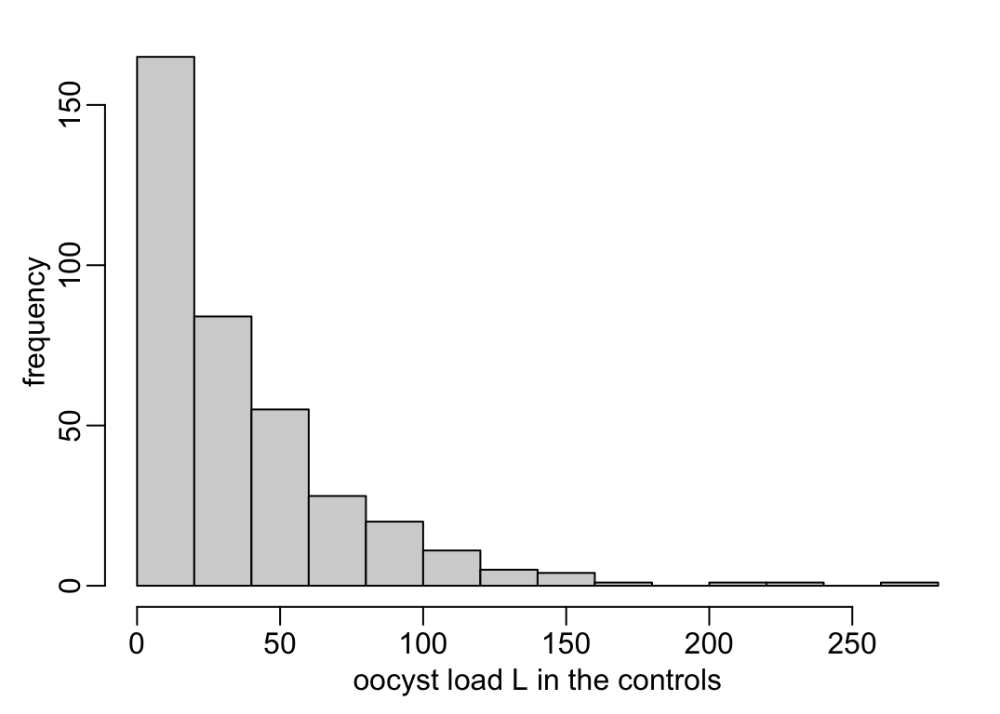
An alternative histogram:
max_load <- max(total_oocysts)
hist(total_oocysts, 0:max_load + .5, main = NA,
xlab = "oocyst load L in the controls", ylab = "frequency")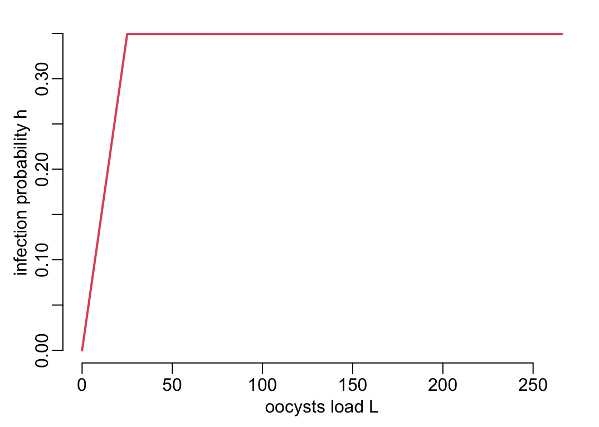
The cumulative distribution together with a fitted geometric distribution:
oocysts_control |>
group_by(total_oocysts) |>
tally() |>
mutate(cum_n = cumsum(n) / sum(n)) |>
with(plot(total_oocysts, cum_n, type = "s", ylim = 0:1,
xlab = "oocyst load L", ylab = "cumulative proportion of samples"))
p_par <- 1 / mean(total_oocysts)
x <- 1:max_load
lines(x, cumsum(dgeom(x, p_par)), type = "s", col = 2)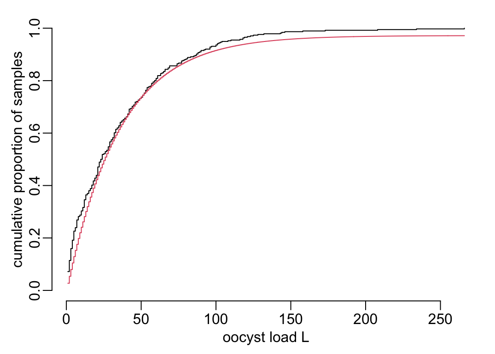
Now that we have a calibrated parametric distribution of the oocyst loads \(L\), let’s look at the data from Aleshnick et al. (2020) converted to oocyst load using the 1,000 factor of Miura et al. (2019):
library(mgcv)
miura_factor <- 1000
aleshnick2020 <- path2data |>
paste0("ppat.1008181.s006.xlsx") |>
readxl::read_excel() |>
rename(infection = `Malaria Infection`, load = `Salivary Gland Load`) |>
dplyr::select(load, infection)
mod <- gam(infection ~ s(load, k = 50), binomial, aleshnick2020, method = "REML")
x <- seq2(1, max(oocysts_control$total_oocysts) * miura_factor)
x_ooc <- x / miura_factor
predictions <- predict(mod, list(load = x), se.fit = .95, type = "response")
plot(x_ooc, predictions$fit, ylim = c(0, max(predictions$ul)), , type = "n",
xlab = "oocyst load L", ylab = "infection probability f")
polygon(c(x_ooc, rev(x_ooc)), c(predictions$ul, rev(predictions$ll)),
border = NA, col = adjustcolor(4, .2))
lines(x_ooc, predictions$fit, lwd = 3, col = 4)
aleshnick2020 |>
arrange(load) |>
mutate(across(load, ~ .x / 1000),
group = c(rep(1:10, each = 41), 10, 10)) |>
group_by(group) |>
summarise(min_load = min(load),
max_load = max(load),
mean_load = mean(load),
proportion = list(binom.test(sum(infection), length(infection)))) |>
mutate(estimate = map_dbl(proportion, "estimate"),
confint = proportion |>
map("conf.int") |>
map(~ setNames(.x, c("ll", "ul")))) |>
tidyr::unnest_wider(confint) |>
with({
arrows(mean_load, ll, mean_load, ul, .1, 90, 3)
points(mean_load, estimate, pch = 19)
abline(v = min_load, col = "grey")
})
aleshnick2020 |>
mutate(across(infection, ~ .x * .9)) |>
with(points(load / miura_factor, infection, pch = "|"))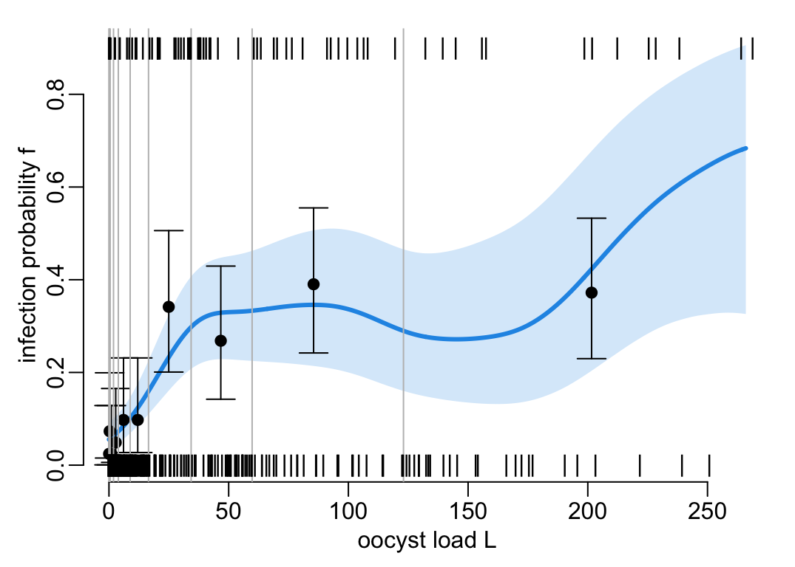
Let’s make a simplified version of it:
x_threshold <- 25000
x_threshold2 <- x_threshold / miura_factor
plateau_val <- aleshnick2020 |>
filter(load > x_threshold) |>
with(sum(infection) / length(infection))
slope_val <- miura_factor * plateau_val / x_threshold
h <- function(x) {
map_dbl(x, function(x) {
if (x < x_threshold2) return(slope_val * x)
plateau_val
})
}And this is what this function \(h\) function coded in h() looks like:
L_val <- seq2(0, 100)
plotl(L_val, h(L_val),
xlab = "oocysts load L", ylab = "infection probability h")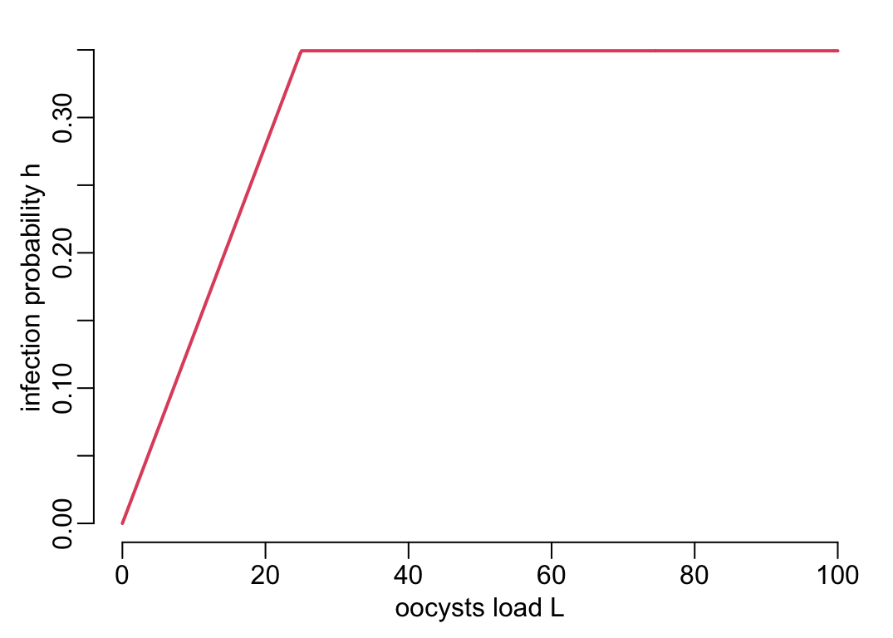
The same on the whole range of oocyst load:
L_val <- seq2(0, max_load)
plotl(L_val, h(L_val),
xlab = "oocysts load L", ylab = "infection probability h")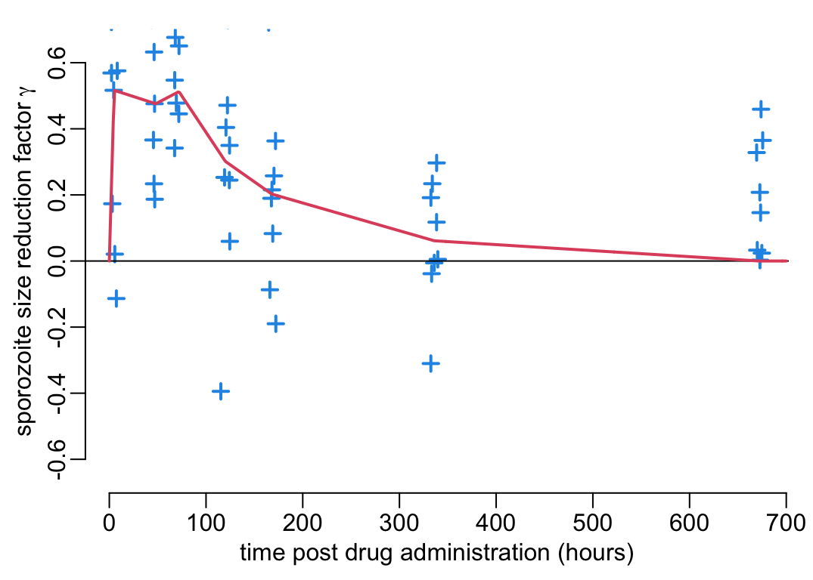
Combining h() with the observed distribution of oocyst loads in order to convert a value of \(\beta\) into a reduction factor of \(b\) or \(R_0\):
f <- function(beta, prob = p_par, loads = 1:max_load) {
densities <- dgeom(loads, prob)
densities <- densities / sum(densities)
denominator <- h(loads)
map_dbl(beta, ~ sum(densities * h((1 - .x) * loads) / denominator))
}And here is the TRA as a function of \(\beta\):
beta_vals <- seq2(0, 1)
y_vals <- f(beta_vals)
opar <- par(pty = "s", xpd = TRUE)
plot(1 - beta_vals, y_vals, type = "l", xaxs = "i", yaxs = "i", ylab = ylab_b,
xlab = bquote("reducing factor 1 -" ~ beta ~ "on oocyst load L"))
par(opar)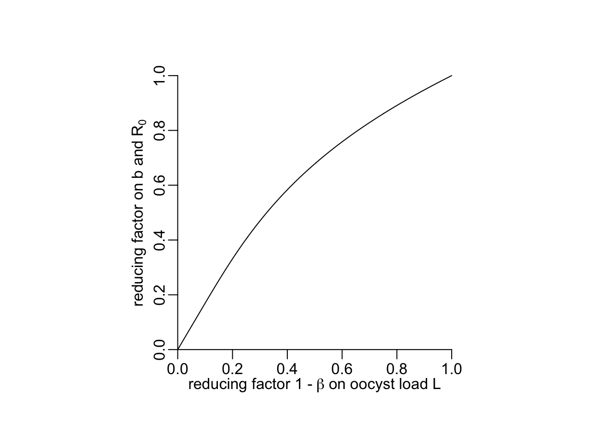
By combining Figure 1 and Figure 2 we obtain the reduction factor of \(b\) and \(R_0\) as a function of time \(t\) post drug administration:
plot(NA, xlim = c(0, 700), ylim = 0:1, xlab = xlab_pda, ylab = ylab_b)
lines(pda_t, f(betas))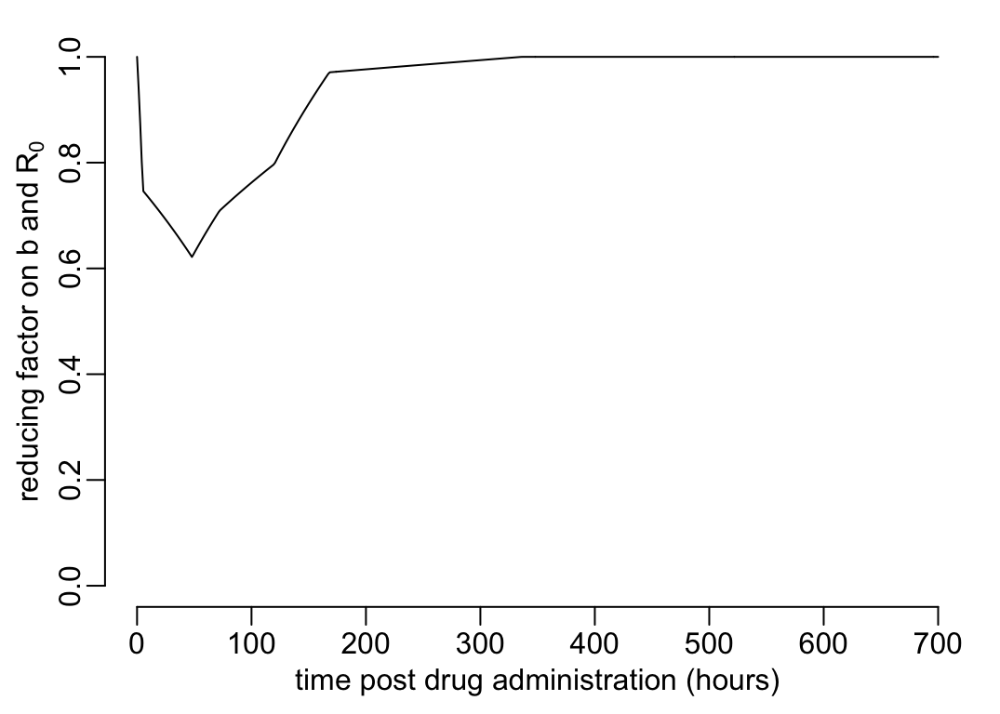
5.3 Sizes of oocysts at 7 dpi
Malarone decreases by the multiplicative factor \(1 - \gamma\) (\(0 \leq \gamma \leq 1\)) the size of oocysts at 7 dpi. Furthermore, figure 5B from Werling et al. (2019) suggests a linear relationship between the development time and the oocyst size. By assuming that the EIP corresponds to a given size of the oocysts, we can model the effect of \(\gamma\) on \(n\) as so:
\[ \frac{1}{1 - \gamma(t)}n \]
With this established, let’s now pull out the data from Figure 3a:
gamma_data <- reading_exp_data("percentage_inhibition_size2.rds")and create a function gamma() on the percentage \(\gamma(t)\) decrease in oocysts size at 7 dpi as a function of time \(t\) post drug administration:
gamma0 <- data2function(gamma_data)
gamma <- function(x) NAto0(gamma0(x))And let’s visualize this function \(\gamma(t)\) together with the experimental data:
plot_experimental_data(gamma_data, ylim = c(-.65, .65),
ylab = bquote("sporozoite size reduction factor" ~ gamma))
lines3(pda_t, gamma(pda_t))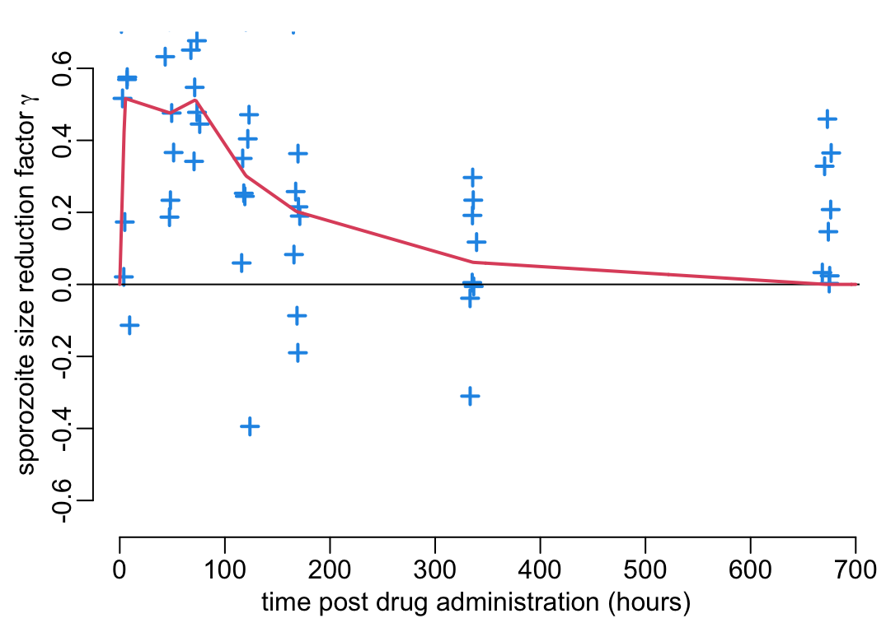
Assumption 2: the EIP corresponds to a given size of the oocysts.
5.4 Combining the 3 effects
In this section we combine the 3 effects reviewed above into a reduction effect of the basic reproduction ratio \(R_0\). If we assume that all the mosquitoes feed on people who received malarone \(t\) time units ago, the reduction factor \(\delta(t)\) of \(R_0\) reads:
\[ \delta(t, g, n, L) = (1 - \alpha(t))f(\beta(t))e^{-gn\gamma(t)/(1-\gamma(t))} \] where \(L\) is the mean oocyst load in absence of malarone. The corresponding R code:
delta <- function(t, g, n) {
(1 - alpha(t)) * f(beta(t)) * exp(- g * n * gamma(t) / (1 - gamma(t)))
}Note 1: \(g\) and \(n\) should be expressed in the same time units.
Note 2: \(t\) should be expressed in hours.
If we now assume that all the mosquitoes feed on people who were treated sometimes during the past \(D\) time units, then the mean reduction factor of \(R_0\) reads:
\[ \lambda(g, n, L, D) = \frac{1}{D}\int_0^D\delta(t, g, n, L)dt \tag{4}\]
Ideally, we’d like \(D\) to be large enough so that \(\delta(t = D, g, n, L)\simeq 0\). The corresponding R code is:
lambda <- function(D, g, n, ...) {
integrate(function(x) delta(x, g, n), 0, D, ...)$value / D
}Note 1: \(g\) and \(n\) should be expressed in the same time units.
Note 2: \(D\) should be expressed in hours.
6 Epidemiological effects of malarone
In this section we use \(\lambda\) to develop what interests us here: the mosquito-mediated epidemiological effects of malarone. Since we are interested only in the effect of malarone that is mediated by the mosquito compartment, in what follows we’ll disregard the direct and intended effect of malarone, which is the curation of infected people. We will also consider two types of use of malarone: mass treatment where a given proportion of the population is treated independently of their clinical status and treatment of the infected, which is the way that malarone is currently used. We’ll start however with the mass treatment as it’s the easiest case to model and it will provide us with a gold standard to which to compare the effects of the treatment of infected.
6.1 Mass treatment
Mass treatment is not affected by the epidemiological context so its mosquito-mediated effect \(\pi\) can be expresses as:
\[ \pi(\mu, g, n, L, D) = 1 - \left(1 - \min_{\Delta \ge D}\lambda\left(g, n, L, \Delta\right)\right)\mu \]
where \(\mu\) is the proportion of the population that receive the treatment and \(1/D\) is the frequency of treatment, assuming an absence of synchrony of treatment intake between people (i.e. the times at which each individual takes its treatment are random).
Note: \(g\) and \(n\) should be expressed in the same time units.
6.2 Treatment of infected
Finally, let’s put the effect of malarone into an epidemiological context. If \(\bar{X}\) is the disease prevalence and \(r\) the human recovery rate, then we can approximate the disease incidence by \(\bar{X}r\). If \(\tau\) is the treatment coverage (i.e. the proportion of new cases who receive treatment), then the treatment incidence is \(\tau\bar{X}r\). This means that the proportion of people who received treatment sometimes during the past \(D\) time units is \(1 - e^{-\tau\bar{X}rD}\) and that the mean reduction factor \(\rho\) of \(R_0\) reads:
\[ \rho(g, n, L, \tau, \bar{X}, r, D) = 1 - (1 - \lambda(g, n, L, D))\left(1 - e^{-\tau\bar{X}rD}\right) \tag{5}\]
Note 1: \(g\) and \(n\) should be expressed in the same time units.
Note 2: \(r\) and \(D\) should be both expressed in hours.
7 Numerical analysis
The table below lists the parameters of the models, together with their definitions and their values and units:
| parameter | definition | values | unit |
|---|---|---|---|
| \(g\) | mosquito death rate | 1 / 14 | /day. |
| \(n\) | extrinsic incubation period (EIP) | 6, 10 or 14 | days |
| \(r\) | human recovery rate | 1 / 14 | /day |
| \(1/D\) | frequency of treatment intake | 1/28 - 1 | /day |
| \(\mu\) | mass treatment coverage | 0-100 | % |
| \(\tau\) | infected treatment coverage | 0-100 | % |
| \(\bar{X}\) | prevalence | 0-100 | % |
7.1 Reducing factor \(\delta(t)\)
The \(R_0\) reducing factor \(\rho(t)\) is computed by assuming that all the mosquitoes feed on people \(t\) hours after drug administration. For a mosquito life expectancy \(1/g\) of 14 days and an EPI \(n\) of 7 days, if the all the mosquitoes feed on people 100 hours after drug administration, the \(R_0\) reducing factor \(\delta\) is:
(effect_at_t100 <- delta(t = 100, g = 1 / 14, n = 7))[1] 0.3525307More generally, if all the mosquitoes feed on people \(t\) hours after drug administration, the \(R_0\) reducing factor looks like:
pda_t2 <- seq(0, 24 * 28, le = 2^10)
ys <- delta(t = pda_t2, g = 1 / (14 * 24), n = 7 * 24)
plotl(pda_t2, ys, ylim = 0:1, xlab = xlab_pda, ylab = ylab_delta)
abline(v = 100, col = 4)
abline(h = effect_at_t100, col = 4)
points(100, effect_at_t100, col = 4)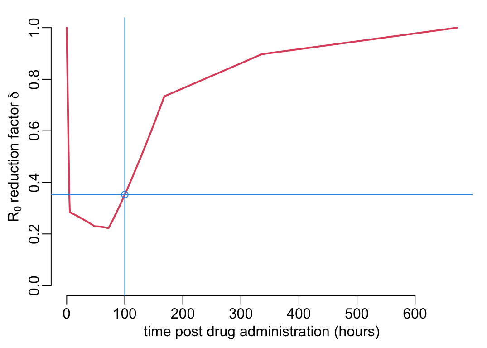
where the blue point and lines show the case where all the mosquitoes feed on people 100 hours after drug administration.
7.2 Reducing factor \(\lambda(D)\)
The \(R_0\) reducing factor \(\lambda(t)\) is computed by assuming that all the mosquitoes feed on people that were treated sometimes during the past \(D\) time units. Considering that all the mosquitoes feed of people who received treatment in the past 28 days, the \(R_0\) reducing factor \(\lambda\) is:
(mean_effect_over28days <- lambda(D = 28 * 24, g = 1 / 14, n = 7))[1] 0.7736171which, on the previous plot, looks like:
plot(pda_t2, ys, ylim = 0:1, xaxs = "i", yaxs = "i", type = "n",
xlab = xlab_pda, ylab = ylab_delta)
polygon(c(pda_t2[1], pda_t2, tail(pda_t2, 1)), c(0, ys, 0),
border = NA, col = adjustcolor(4, .2))
lines3(pda_t2, ys)
abline(h = mean_effect_over28days, col = 4, lty = 2, lwd = lwd_val)
text(mean(pda_t2), 1.04 * mean_effect_over28days, col = 4,
bquote(" mean" ~ R[0] ~ "reduction factor" ~ lambda))
box(bty = "o")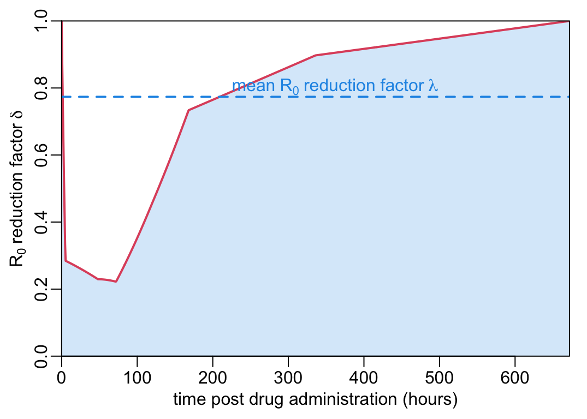
A function that computes the values for \(\lambda\):
future::plan("multisession", workers = parallel::detectCores())
compute_lambda_val <- function(n, g, D) {
tidyr::expand_grid(n, g, D) |>
mutate(lambda = furrr::future_pmap_dbl(list(D, g, n), ~ lambda(..1, ..2, ..3)))
}Let’s now compute \(\lambda\) values (takes ca 47” on the laptop):
lambda_vals1 <- compute_lambda_val(n = c(6, 10, 14),
g = 1 / c(14, 10, 7),
D = seq2(1, 28) * 24)Second set of \(\lambda\) values for a second range of treatment frequency (takes ca 49” on the laptop):
lambda_vals2 <- compute_lambda_val(n = c(6, 10, 14),
g = 1 / c(14, 10, 7),
D = seq2(3, 8) * 7 * 24)7.3 Mass treatment
pi <- function(lambda, prop) {
lambda |>
tidyr::expand_grid(prop) |>
mutate(across(D, ~ .x / 24)) |>
mutate(value = 1 - (1 - min_of_following(lambda)) * prop, .by = c(n, g)) |>
arrange(D)
}prev <- 0:10 / 10
pi_vals1 <- pi(lambda_vals1, prev)
pi_vals2 <- pi(lambda_vals2, prev)A function that plots one panel:
plot_pi_D <- function(x, xlab = "intake frequency (/day)", ylab = ylab_pi,
ylim = 0:1, xlim = c(30, 0), ablinev, ablineh) {
plot(NA, xlim = xlim, ylim = ylim, axes = FALSE,
xaxs = "i", yaxs = "i", xlab = xlab, ylab = ylab)
ablinev()
ablineh()
box(bty = "o")
x |>
group_split(prop) |>
walk2(YlOrRd11, ~ with(.x, lines(D, value, col = .y, lwd = lwd_val)))
}Some tunings:
mtext2 <- function(x) mtext(paste("EPI =", x, "days"), 3, .5)
mtext3 <- function(x) mtext(paste0("g = 1/", x, " /day"), 4, .75)
legend4 <- function(...) {
legend(lty = 1, lwd = lwd_val, adj = c(1, .5), x.intersp = 4, ...)
}
legend5 <- function(...) {
par(xpd = TRUE)
legend4(col = YlOrRd11, inset = c(-.25, -.23), ...)
par(xpd = FALSE)
}
legend6 <- function(...) {
legend5("bottomleft", legend = paste(seq(0, 100, 10), "%"), ...)
}plot_treatment <- function(x, f = plot_pi_D, xlim = c(30, 0), ylim = 0:1,
axis1fct = axis1,
add_lgd = make_legend(title = "proportion treated",
text.width = .5),
ablnv, ablnh,
plt_grd = make_grid1(ats, prev), ylab = ylab_pi) {
f0 <- function(...)
f(..., xlim = xlim, ylim = ylim, ablinev = ablnv, ablineh = ablnh)
f_ul <- function(...) f0(..., xlab = NA, ylab = ylab)
f_ur <- function(...) f0(..., xlab = NA, ylab = NA)
f_lr <- function(...) f0(..., ylab = NA)
opar <- par(mfrow = c(3, 3))
f_ul(filter(x, n == 6, g < .1))
mtext2(6); axis(2)
f_ur(filter(x, n == 6, g == .1))
mtext2(10)
add_lgd()
f_ur(filter(x, n == 6, g > .1))
mtext2(14); mtext3(14)
f_ul(filter(x, n == 10, g < .1))
axis(2)
f_ur(filter(x, n == 10, g == .1))
f_ur(filter(x, n == 10, g > .1))
mtext3(10)
f0(filter(x, n == 14, g < .1), ylab = ylab)
axis1fct(); axis(2)
f_lr(filter(x, n == 14, g == .1))
axis1fct()
f_lr(filter(x, n == 14, g > .1))
axis1fct(); mtext3(7)
par(opar)
}plot_mass_treatment <- function(x, ...) {
plot_treatment(x, f = plot_pi_D,
add_lgd = function() legend6(title = "proportion treated",
text.width = .5), ...)
}The figure on the first range of treatment frequency:
ats1 <- seq(25, 5, -5)
plot_mass_treatment(pi_vals1, xlim = c(30, 0), ylim = 0:1, ylab = ylab_pi,
axis1fct = function()
axis(1, c(ats1, 1), c(paste0("1/", ats1), 1)),
ablnh = function() abline(h = prev, col = "grey"),
ablnv = function() abline(v = ats1, col = "grey"))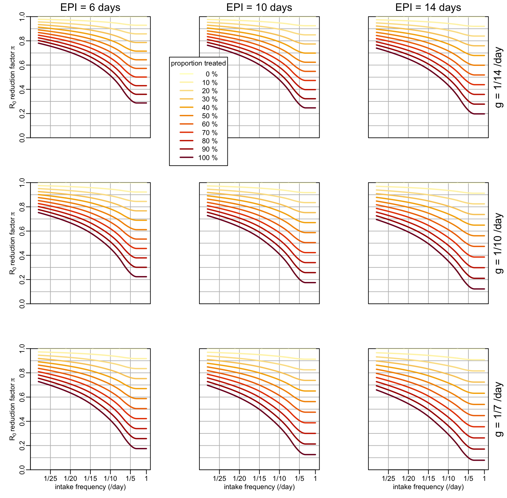
The figure on the second range of treatment frequency:
ats2 <- seq(56, 21, -7)
plot_mass_treatment(pi_vals2, xlim = c(8, 3) * 7, ylim = 0:1, ylab = ylab_pi,
axis1fct = function()
axis(1, c(ats2, 1), c(paste0("1/", ats2), 1)),
ablnh = function() abline(h = prev, col = "grey"),
ablnv = function() abline(v = ats2, col = "grey"))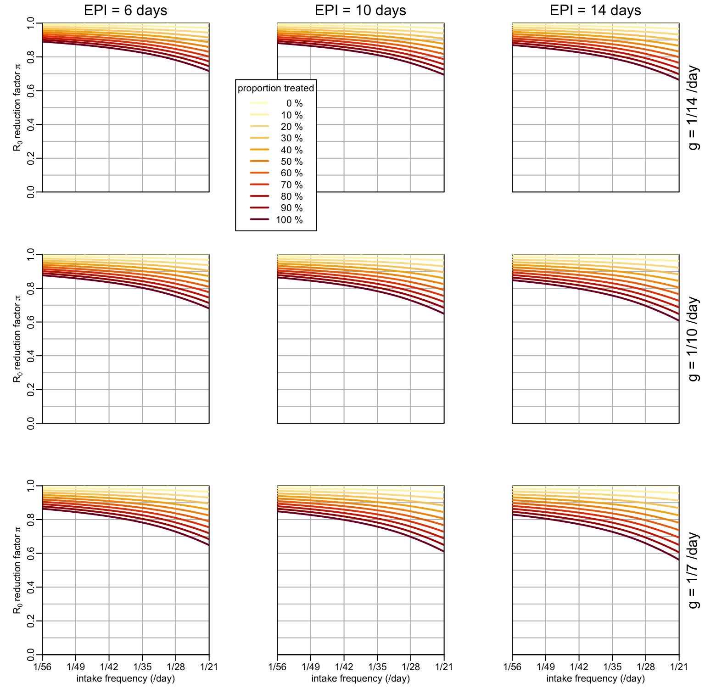
7.4 Treatment of infected
rho <- function(lambda, X, tau, r = 1 / (14 * 24)) {
lambda |>
filter(D > 27 * 24) |>
tidyr::expand_grid(X, tau) |>
mutate(value = 1 - (1 - lambda) * (1 - exp(- tau * X * r * D))) |>
arrange(tau)
}rho_vals <- rho(lambda_vals1, prev, seq2(0, 1))A function that plots one panel:
abline3 <- function(...) abline(..., col = "lightgrey")
abline4 <- function(...) abline3(..., lwd = lwd_val)
plot_tau_rho <- function(x, ylab = ylab_rho,
xlab = bquote("proportion" ~ tau ~ "treated (%)"),
xlim = 0:1, ylim = 0:1, ablinev, ablineh) {
plot(NA, xlim = xlim, ylim = ylim, xlab = xlab, ylab = ylab, xaxs = "i", yaxs = "i",
axes = FALSE)
ablinev()
ablineh()
box(bty = "o")
x |>
group_split(X) |>
walk2(YlOrRd11, ~ with(.x, lines(tau, value, col = .y)))
}plot_treatment_infected <- function(x, ...) {
plot_treatment(x, xlim = 0:1,
f = plot_tau_rho,
axis1fct = function() axis(1),
add_lgd = function() legend6(title = "prevalence", text.width = 0),
ablnv = function() {
abline3(v = seq(0, 1, .05))
abline4(v = seq(0, 1, .1))
}, ...)
}The figure:
plot_treatment_infected(rho_vals, ylim = 0:1, ylab = ylab_rho,
ablnh = function() {
abline4(h = seq(0, 1, .1))
abline3(h = seq(0, 1, .05))
})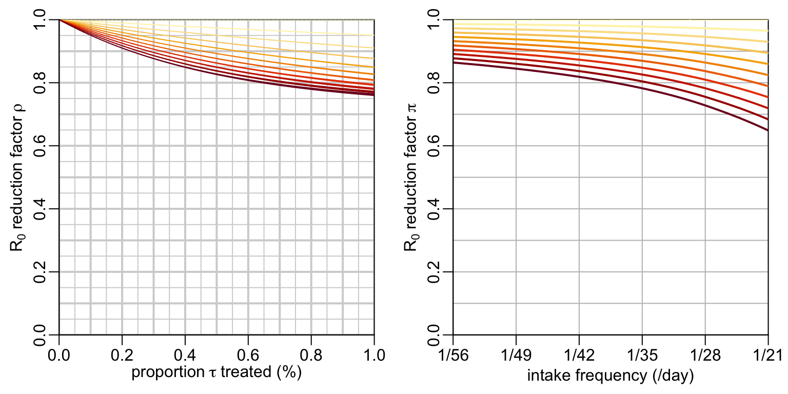
7.5 Examples with \(R_0\)
If we want to look at a specific example of \(R_0\), we need to acknowledge that, everything else being constant, \(R_0\) is proportional to the probability \(P_e\) of an infected mosquito to become infectious:
\[ R_0 \propto e^{-gn} \]
with this being considered, let’s now consider for example a reference value of \(R_0 = 5\) in absence of treatment and when the EPI \(n\) is equal to the mosquito life expectancy \(1/g = 14\) days. And this is coded is the following function:
R0_effect <- function(x, R0ref = 5) {
x2 <- mutate(x, R0 = exp(-g * n))
cst <- x2 |>
filter(n == 14, g < .1) |>
pull(R0) |>
unique()
x2 |>
mutate(across(value, ~ .x * R0 * R0ref / cst)) |>
dplyr::select(-R0)
}The effect of mass treatment on the first range of treatment frequency:
pi_vals1 |>
R0_effect() |>
plot_mass_treatment(xlim = c(30, 0), ylim = c(0, 10), ylab = bquote(R[0]),
axis1fct = function()
axis(1, c(ats1, 1), c(paste0("1/", ats1), 1)),
ablnh = function() abline(h = 1:9, col = "grey"),
ablnv = function() abline(v = ats1, col = "grey"))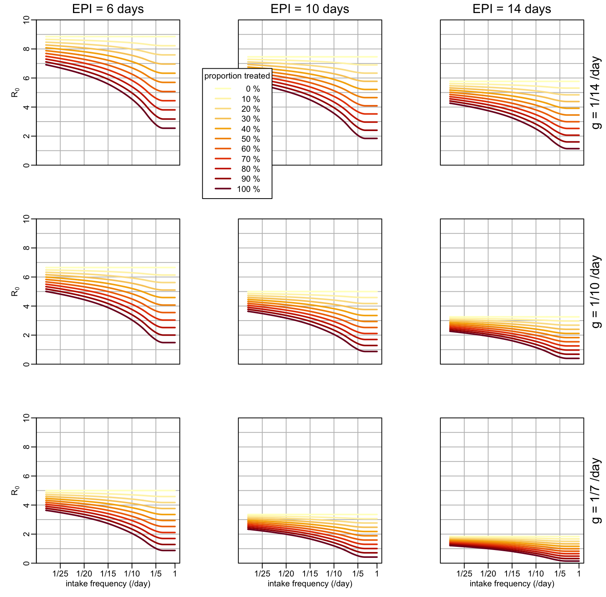
The figure on the second range of treatment frequency:
pi_vals2 |>
R0_effect() |>
plot_mass_treatment(xlim = c(8, 3) * 7, ylim = c(0, 10), ylab = bquote(R[0]),
axis1fct = function()
axis(1, c(ats2, 1), c(paste0("1/", ats2), 1)),
ablnh = function() abline(h = 1:9, col = "grey"),
ablnv = function() abline(v = ats2, col = "grey"))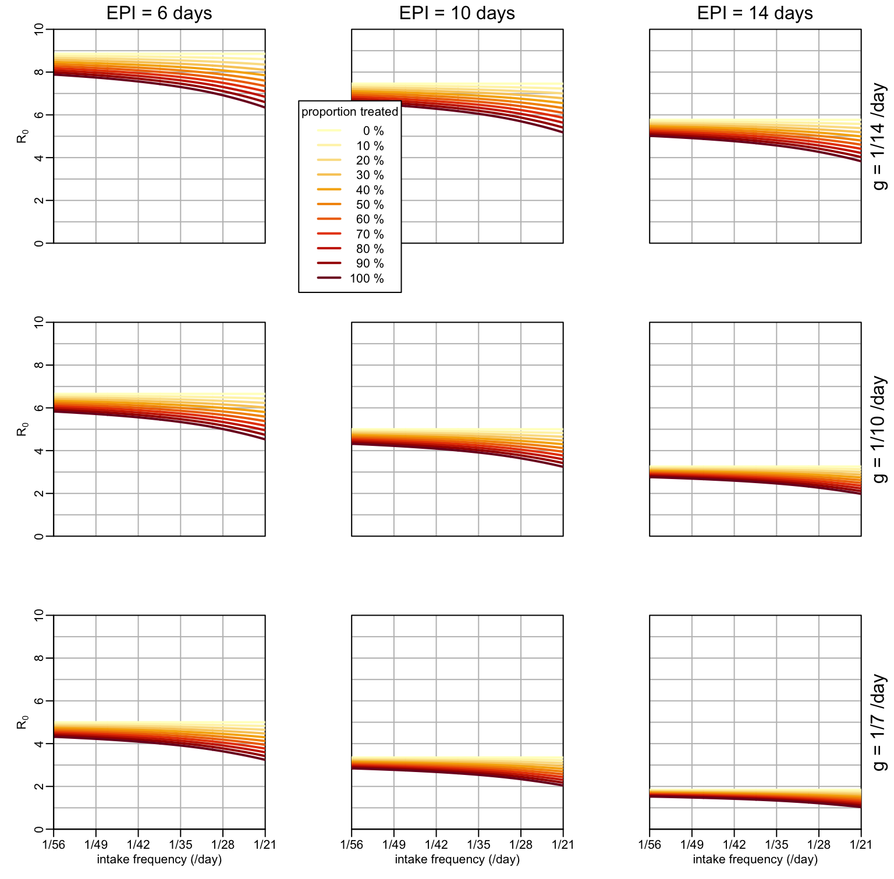
And the effect of the treatment of infected would look like:
rho_vals |>
R0_effect() |>
plot_treatment_infected(ylim = c(0, 10), ylab = bquote(R[0]),
ablnh = function() {
abline4(h = 0:10)
abline3(h = .5:9.5)
})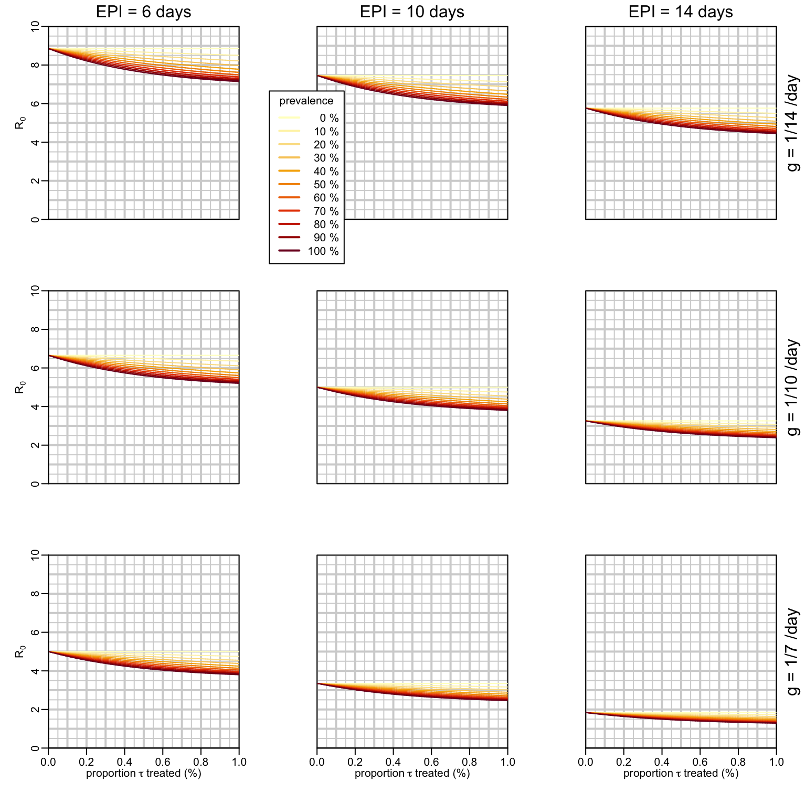
7.6 Main text figure
opar <- par(mfrow = 1:2)
rho_vals |>
filter(n == 10, g == .1) |>
plot_tau_rho(xlab = bquote("proportion" ~ tau ~ "treated (%)"), ylab = ylab_rho,
xlim = 0:1, ylim = 0:1,
ablinev = function() {
abline3(v = seq(0, 1, .05))
abline4(v = seq(0, 1, .1))
},
ablineh = function() {
abline3(h = seq(0, 1, .05))
abline4(h = seq(0, 1, .1))
})
axis(1); axis(2)
pi_vals2 |>
filter(n == 10, g == .1) |>
plot_pi_D(xlab = "intake frequency (/day)", ylab = ylab_pi,
xlim = c(8, 3) * 7, ylim = 0:1,
ablinev = function() abline(v = ats2, col = "grey"),
ablineh = function() abline(h = prev, col = "grey"))
axis(1, c(ats2, 1), c(paste0("1/", ats2), 1))
axis(2)par(opar)7.7 Main text figure
7.7.1 PNG output
7.7.2 PDF output
Au format Nature Medicine:
7.7.3 TIFF output
Aleshnick, M., V. V. Ganusov, G. Nasir, G. Yenokyan, and P. Sinnis. 2020. Experimental determination of the force of malaria infection reveals a non-linear relationship to mosquito sporozoite loads. PLoS Pathog 16:e1008181.
Miura, K., B. J. Swihart, B. Deng, L. Zhou, T. P. Pham, A. Diouf, M. P. Fay, et al. 2019. Strong concordance between percent inhibition in oocyst and sporozoite intensities in a Plasmodium falciparum standard membrane-feeding assay. Parasites Vectors 12:206.
Saul, A. J., P. M. Graves, and B. H. Kay. 1990. A cyclical feeding model for pathogen transmission and its application to determine vectorial capacity from vector infection rates. J Appl Ecol 27:123.
Smith, D. L., and E. F. McKenzie. 2004. Statics and dynamics of malaria infection in Anopheles mosquitoes. Malar J 3:13.
Werling, K., W. R. Shaw, M. A. Itoe, K. A. Westervelt, P. Marcenac, D. G. Paton, D. Peng, et al. 2019. Steroid hormone function controls non-competitive Plasmodium development in Anopheles. Cell 177:315–325.e14.